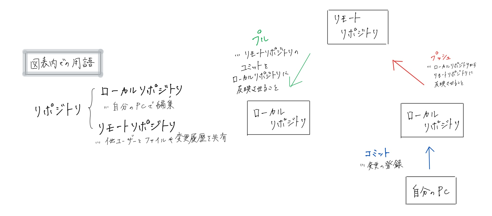

第一回
gitに関して
gitとはソースコードや変更履歴を管理するために使われる分散型管理システムのことです。
※ソースコード：人間が理解しやすいプログラミング言語で書かれた、プログラムの元となるテキストデータのこと
下にある図がgitの基本的な構造と用語をまとめたものです

いいいいいい
ううううううう
ええええええええ
デザイン演習Ⅰ・Ⅱトップページ
XBPトップページ
Yhoo
pdfファイル